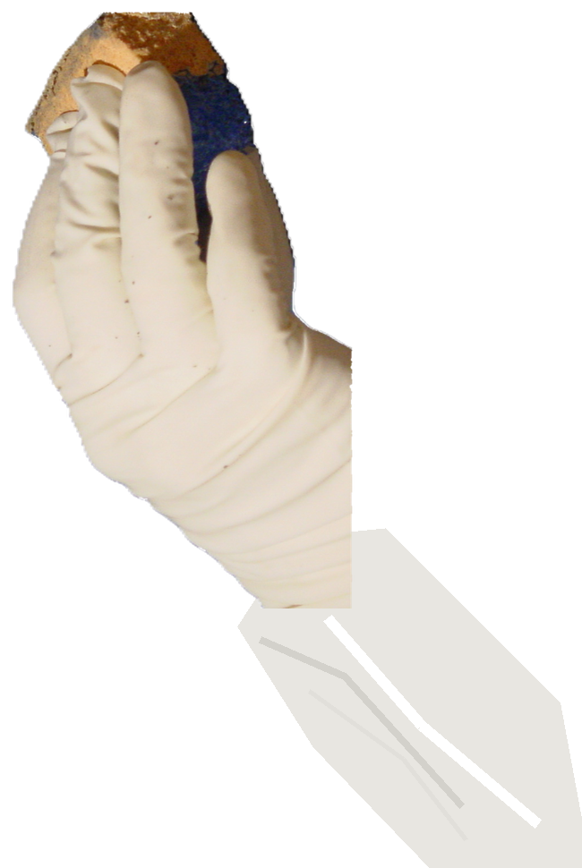

Open Day · 12 dicembre 2026
Arte e Immagine
Piccoli restauratori — Tocca le risposte sulla LIM o sul tablet. Non servono dati personali.
Pronto a esplorare?
Tre sfide brevi, spiegazioni dopo ogni risposta e un timbro finale sul tuo passaporto.
Prima prova: scopri la Creazione di Adamo!
Passa il dito o il mouse sulla patina scura: sotto si nasconde un vero affresco di Michelangelo.

Immagine: Michelangelo, Creazione di Adamo, Cappella Sistina (pubblico dominio). Simulazione didattica, non un intervento reale di restauro.
Usa la Wishab virtuale: tieni premuto e strofina delicatamente.
Progetto didattico per l’Open Day della Scuola Media G. Puccini · Prof. Marco Cigolotti · Realizzato con il supporto dell’IA. Nessun dato personale viene richiesto o salvato.